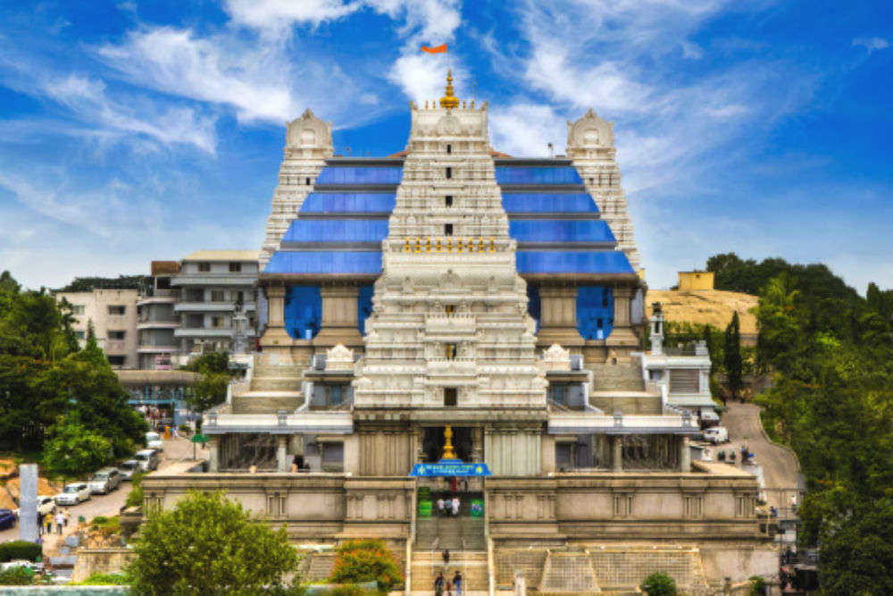

Iskcon
Religious Sites
Sri Radha Krishna-chandra Temple is one of the largest Krishna Hindu temples in the world, affiliated with ISKCON Revival Movement. It is located at Rajajinagar, in North Bangalore in the Indian State of Karnataka.
Timings : 4:15 AM - 5:00 AM, 7:15 AM - 1:00 PM, 4:15 PM - 8:20 PM